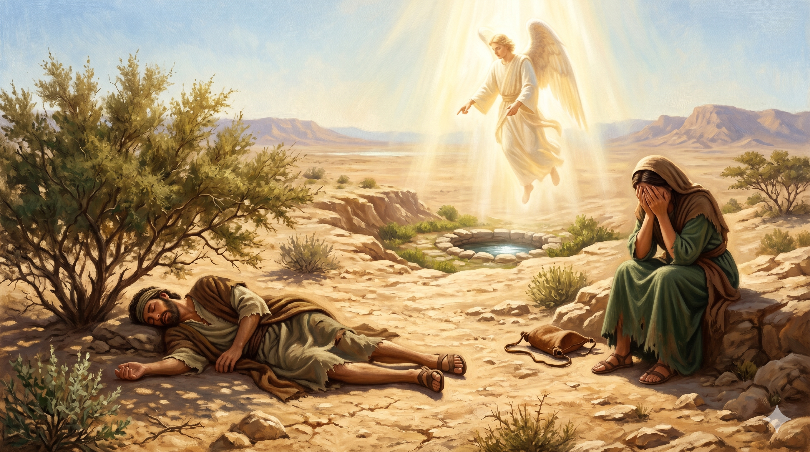

새벽 어스름, 떡과 물 한 가죽부대를 어깨에 메고 광야로 떠나는 하갈과 이스마엘 — 늙은 아브라함은 차마 돌아서지 못하고 그 뒷모습을 바라본다
아브라함이 아침에 일찍이 일어나 떡과 물 한 가죽부대를 가져다가 하갈의 어깨에 메워 주고 그 아이를 데리고 가게 하니 하갈이 나가서 브엘세바 광야에서 방황하더니 … 하나님이 그 어린아이의 소리를 들으셨으므로 하나님의 사자가 하늘에서부터 하갈을 불러 이르시되 하갈아 무슨 일이냐 두려워하지 말라 하나님이 거기 있는 아이의 소리를 들으셨나니 — 창세기 21:14, 17
이삭이 젖을 떼던 잔치 자리에서 사라는 이스마엘이 이삭을 "희롱하는" 모습을 보았습니다. 히브리어 '메차헤크'는 "이삭(이츠하크)처럼 군다"는 뉘앙스를 담고 있어 — 단순한 장난이 아니라 약속의 자녀의 자리를 위협하는 행동이었습니다. 사라의 청을 들은 아브라함은 깊이 근심합니다. 이스마엘 역시 그의 아들이었고, 14년을 함께 키운 골육이었기 때문입니다. 그러나 하나님은 "사라가 네게 이른 말을 다 들으라"고 말씀하십니다. 인간의 방법(하갈)으로 만든 결과는 결국 약속의 길과 함께 갈 수 없었습니다. 아브라함은 새벽에 일찍 일어나 떡과 물 한 부대만 들려 두 모자를 떠나보냅니다 — 평생 잊을 수 없는 새벽이었을 것입니다.
광야에서 물이 다하자 하갈은 아이를 떨기나무 아래 두고 "아이의 죽음을 차마 보지 못하리라" 하며 멀찍이 앉아 소리 내어 웁니다. 그때 본문은 놀라운 표현을 씁니다. "하나님이 그 어린아이의 소리를 들으셨다." 우는 자는 하갈이었지만 하나님이 들으신 것은 이스마엘의 소리였습니다. 이스마엘(이쉬마엘)이라는 이름의 뜻이 바로 "하나님이 들으신다"입니다. 하나님은 약속의 줄기 밖으로 밀려난 자의 부르짖음마저 외면하지 않으셨습니다. 사라의 시야에서는 사라졌지만 하나님의 시야에서는 한 번도 사라진 적이 없었던 아이 — 거기서 하나님은 우물을 보여 주십니다.

광야의 떨기나무 아래 쓰러진 이스마엘 — 그 위로 하늘에서부터 하갈을 부르시는 하나님의 사자
우리 삶에는 "내 손으로 만든 이스마엘"이 있습니다. 기다리지 못해 인간의 방법으로 빚어낸 관계, 일, 결정들 — 그것들은 처음에는 해답처럼 보였지만 결국 약속의 길과 충돌하는 자리에 옵니다. 그 정리의 새벽은 누구에게나 아픕니다. 그러나 하나님이 약속의 길을 지키시려 할 때, 우리는 정직하게 손을 펴야 합니다. 단, 한 가지를 잊지 마십시오 — 정리되어 떠나는 그 사람도 여전히 하나님의 시야 안에 있습니다. 하나님은 떨기나무 아래로 그를 따라가시고, 거기서 그의 우물을 열어 주십니다. 우리가 더 이상 책임질 수 없는 그 자리에서, 하나님은 여전히 책임지고 계십니다.
또 다른 자리에서 우리는 하갈의 자리에 있습니다. 누군가에게 밀려난 자리, 사람들의 시야에서 사라진 자리, 가진 물이 모두 떨어진 자리. 하갈은 "차마 보지 못하리라"며 소리 내어 울었고, 그때 하나님은 들으셨습니다. 당신의 울음을 사람은 듣지 못해도 하나님은 듣고 계십니다. 더구나 본문은 "거기 있는 아이의 소리"라고 말합니다 — 당신이 누군가의 부모라면, 당신의 절망보다 자녀의 한숨에 먼저 응답하시는 하나님을 신뢰하십시오. 우물은 멀리 있지 않았습니다. 다만 눈물에 가려 보이지 않았을 뿐입니다.
내 손으로 만든 이스마엘은 정리되어야 합니다.
그러나 정리되어 떠난 그 자리에도 하나님은 우물을 파십니다.
사람의 시야에서 사라져도 — 하나님의 귀는 결코 닫히지 않습니다.